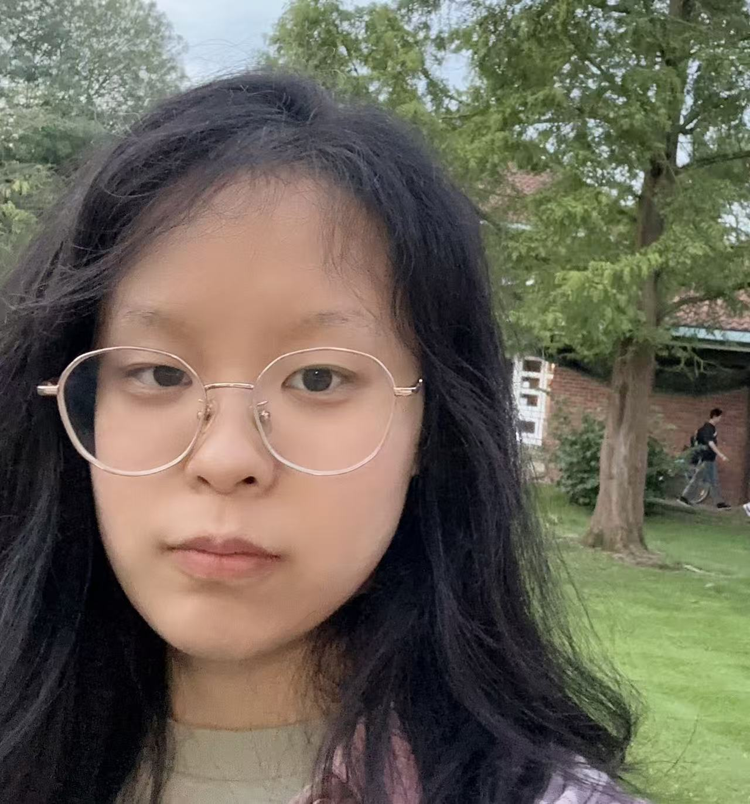

👋 Hi! I am a coming Ph.D. student at the Institute of Automation, University of Chinese Academy of Sciences (CASIA), currently in a joint training program with Zhongguancun Academy(ZGCA), under the supervision of Prof. Xuyao Zhang and Prof. Jian Zhao.
Now I'm a 4th-year undergraduate student pursuing my Bachelor's degree in Mathematics and Statistics at Wuhan University.
My research interests now lie at the intersection of Security and large language models. Generally, I'm strongly interested in:
Under the supervision of Prof. Zaiwen Wen , I delved into AI4m , systematically study Lean4(a formal language), and contribute to the development of the world's first formalized optimization theorem library.
Under the supervision of Prof. Feng Wang , I have thoroughly studied Algorithmic Game Theory and read several research papers.
During the "Frontiers in Artificial Intelligence" lecture series provided by Prof. Pietro Liò , I gained in-depth knowledge of Reinforcement Learning, focusing on building multi-Agent systems.
open-source lover & amateur independent producer
I love creating things(even since I was a child), including 💻 small projects, 🎮 games, and 🎵 music.
🇺🇸 English | 🇨🇳 中文 | 🇯🇵 日本語 (Learning)
other hobbies include 🏸 Badminton, 📺 Anime, 🖌️ drawing.